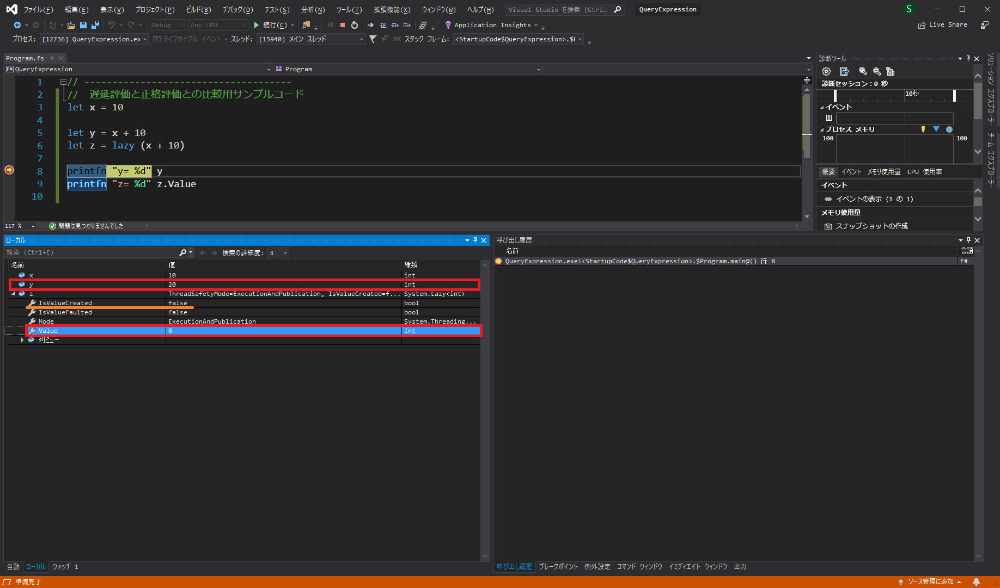

遅延評価の概要
遅延評価(または遅延計算)とは、式が実際に呼び出されるまで評価されないという性質を指します。もう少しだけ言い換えるならば、式の結果が実際に必要となったときに評価される評価方法のことを遅延評価と言います。
遅延評価とは反対に、式を作成した時点ですぐに計算が実行されるような評価方法を正格評価と言います。F#は通常、この正格評価によって式が評価されます。
式を遅延評価させるには、lazy式(= 遅延式)を利用します。
// -------------------------------------
// [ 構文 ]
let identifier = lazy ( expression )このlazy式を利用して、通常の正格評価と遅延評価の挙動の違いを確認してみましょう。これを実際に確認するためには、IDEを利用してデバッグ実行をしなければなりません。もしご自身で試される場合は、Visual Studio か Visual Studio Code などを利用してください。
今回のサンプルコードは以下のようになっています。
// -------------------------------------
// 遅延評価と正格評価との比較用サンプルコード
let x = 10
let y = x + 10
let z = lazy (x + 10)
printfn "y= %d" y // ここにブレークポイント
printfn "z= %d" z.Value上記のコードを実行すると、以下のような結果が得られます。

通常の正格評価である 5行目 の
let y = x + 10let z = lazy (x + 10)しかし、これをそのまま実行再開すると、以下のように正しく実行結果が出力されます。
y= 20
z= 20このことから、9行目の時点、つまり実際に式の値を利用するタイミングで式が評価されたことがわかります。
この性質を利用することで、場合によりますが、プログラムのパフォーマンスを向上させることが可能となります。